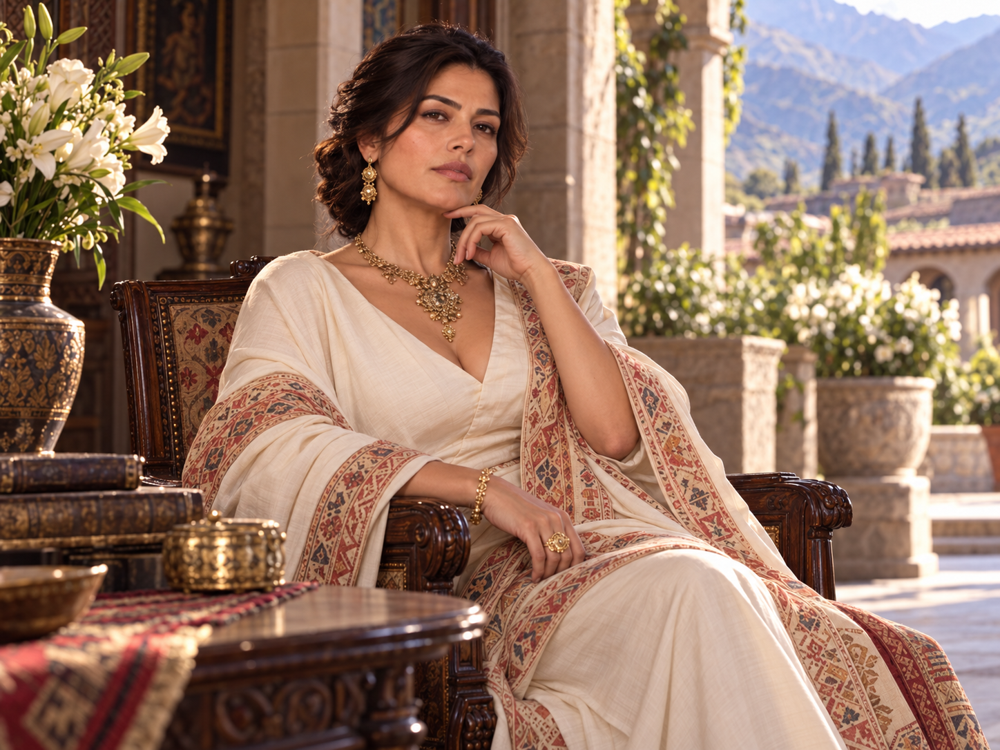
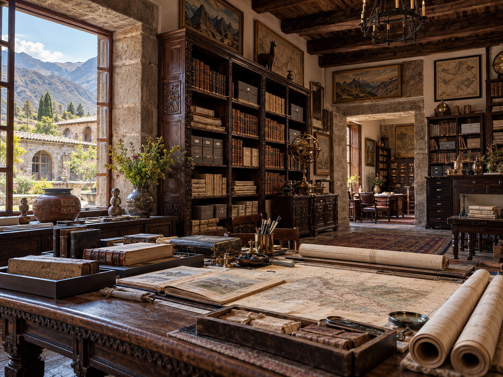
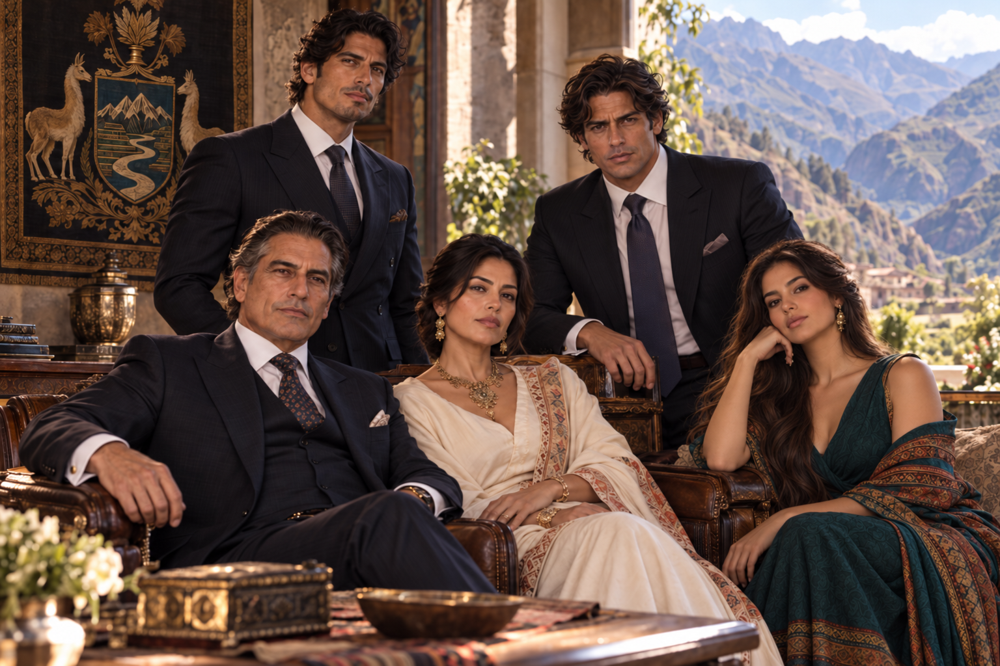

Independent authority
Recognized as a sovereign peer of the Order; neither Ravenscroft nor de Villiers owns, commands or absorbs its House sovereignty.

Ravenscroft World Archive • Recognized Great House
The Andes • Peru and Bolivia • Dynastic continuity and strategic corridors
Independent constitutional peer • House development, October 2026
House Amaru's established Andean identity offers a distinctive counterpoint to the Great Houses of Europe and North America. The developing portrait is of a dynasty whose historical strength lies in connecting the highland interior with the coast through personal obligation, water and energy systems, capital, technical knowledge and carefully defended corridors.
Batch 3 uploaded; identification pending. Seven original PNGs are on the numbered 1–7 test page. Compare them with the separate A–G identification collage; do not use guessed identities until the mapping is confirmed. Image-batch production standard.
Batch 2 identified and integrated (17 October 2026). Seven original images are now mapped A1, B4, C5, D2, E7, F6, G3, including four portraits, proposed infrastructure and both ancestral archive interpretations. Numbered image test · Source manifest. These images do not establish unapproved offices, locations or historical claims.
Batch 1 identified and integrated. Six original illustrations have been permanently named and placed in this dossier. Verified numbered image gallery · Image mapping and source manifest. Proposed estates, institutions and authority remain subject to separate canon approval.
Four confirmed individual portraits, presented here for easy access. Tap any image to open the original high-resolution photograph, or read their family entries below.


The House of the Watersheds is a working English editorial epithet for the proposed Amaru identity, not a purported ancestral title, Quechua translation or formal heraldic motto. The House's imagined strategic instinct is to see the Andes not as isolated valleys but as an interdependent web of water, production, transport, political relationships and long-term commitments.
Amaru is not an unbroken, secret successor to a historical imperial throne; historical descent claims, indigenous relationships and the precise House recognition date remain open. The family cannot represent every Andean people or command communities simply by invoking heritage. Its privately wielded power must be distinguished from the constitutional government, property rights and autonomous communities of modern Peru and Bolivia.
Contradictions worth retaining: public stewardship and private profit; family memory and contested history; resource development and environmental damage; customary obligations and international legal institutions; unity of the senior line and autonomy of affiliated families. These tensions make Amaru a plausible sovereign House rather than a spotless conservation foundation or a generic extractive conglomerate.

Recognized as a sovereign peer of the Order; neither Ravenscroft nor de Villiers owns, commands or absorbs its House sovereignty.
Senior patriarch Rafael and principal heir Nicolás are established. Earlier succession documents and dates have not been invented.
Proposed standing depends on durable multi-generational institutions, protected archives, technical education, professional capital and regional family networks.
Proposed strength in water/energy systems, high-altitude industry and transport bottlenecks, with independent resources and House security.
Proposed subordinate and allied families provide reach without automatic title to their property, employment or political offices.
Recognition entails ordinary Great-House obligations to the Compact, separate from any nine-seat International Council mandate.
Potential multi-household roots in trade, regional administration, kin obligations, agronomy and landscape knowledge. No asserted personal descent from a named real historical ruler.
Conquest and colonial transitions threaten earlier power. Proposed survival strategy blends dispersed patrimony, shifting partnerships, legal recognition and preservation of family records, including difficult compromises.
Colonial crises create internal disagreements about taxation, resistance, loyalties and property. An Amaru surname does not by itself establish participation in the Túpac Amaru rebellions.
New republican states and the War of the Pacific reorder trade, land, industry and political alliances. Amaru networks develop across an international frontier rather than governing either country.
Land and resource reform, crises, migration and new professional institutions test House survival; the broad trajectory is proposed, but no specific real-world movement or official is ascribed secret affiliation.
The marriage of Alejandro Mateo Amaru and Élodie Catherine de Villiers marks an important Ravenscroft–Amaru dynastic connection, while each Great House retains its separate authority.


Ancestral archive — two proposed artistic views. Both Batch 2 archive scenes are preserved as alternate representations of House recordkeeping at the proposed Sacred Valley estate. Their furnishings, maps and pictured objects do not establish possession of any particular sacred artifact or historical record.
Historical geography reference: the real Qhapaq Ñan road system demonstrates how premodern Andean networks connected varied regions and communities. This is background research, not a claim of Amaru ownership, ancestry or proprietorship of the heritage sites.

Proposed: a private historic estate in the Urubamba / Cusco region, provisionally “Casa Amaru del Valle.” A plausible complex of local stonework, terraced landscape, courtyard rooms and discreet later construction—not an archaeological monument or fantastical Inca citadel.

Proposed: an urban institutional headquarters, provisionally “Casa Amaru, Lima,” with House administration, private meetings, financial/legal staff and secure but unostentatious international reception facilities.
Proposed: a La Paz–Altiplano office and partner network balancing Peruvian highland and coastal centers. Local allied families are not assumed to be subordinate without a charter.
Proposed map nodes: Cusco, Urubamba, Arequipa, Puno, Lima–Callao, La Paz–El Alto; thinner corridor and external links to be considered later. Influence is not territorial sovereignty, legal ownership or uniform shading across two nations.

Engineering, irrigation management, watershed research, agriculture and conservation. Distinguish publicly governed water from privately owned facilities and contracts.
Investments in grid resilience, industrial services, mineral processing and technical quality assurance, without implying ownership of national resources.
Long-horizon investment in mountain infrastructure, logistics companies, port contracts, contingency systems and trade finance.
Potential family trusts, scholarship and patronage institutions, arbitration and cross-border legal expertise; public agencies and independent firms are not House subsidiaries.

Wealth accounting: Amaru's principal 2026 net worth remains unassigned. Alejandro's individual financial profile cannot be substituted for it. Keep principal common assets, personal wealth, cadet assets, beneficial ownership, client-managed capital and strategic influence separate.
Suggested House names below have not been locked. Four directly bound Major Houses would provide distinct regional and professional reach; four Lesser Houses would report to the specified Major superior. Candidate names are fictional uses of common surnames, not assertions about real families.
| Candidate | Rank | Immediate superior | Proposed locality / function |
|---|---|---|---|
| House Huamán | Major | Amaru | Cusco and Sacred Valley • upland water, agronomy |
| House Valcárcel | Major | Amaru | Lima–Callao • finance and port-adjacent law |
| House Arce | Major | Amaru | La Paz and Altiplano • industrial services |
| House Rojas | Major | Amaru | Arequipa • energy and engineering |
| House Condori | Lesser | Huamán | Cusco–Puno • watershed specialists |
| House Medina | Lesser | Valcárcel | Callao • trade records and logistics |
| House Cárdenas | Lesser | Arce | Altiplano • assay and transport expertise |
| House Salcedo | Lesser | Rojas | Arequipa • engineering procurement |
Recognized subordinates must have their own Heads, property and family successions. A Major House answers directly to the Great House; only a Lesser House may report through its chartered Major superior. Lucía's Quispe allied lineage remains separate pending explicit classification.
As one of eleven recognized Great Houses, Amaru maintains an independent House voice in the Conclave and is bound by the Order's Compact. The International Council of Nine is a separate, elected body. Its 2026 seat distribution, any Amaru Councillor/deputy and the House's standing Conclave delegates are not assigned by this record.
Alejandro's established Tier II Senior Strategic/Liaison Order standing pertains to him as an individual; it is neither Amaru's Council mandate nor authority to direct all family, allied and Ravenscroft operations. The House's internal security and information network should accord with the wider doctrine of compartmentalized human and institutional relationships, without copying Ravenscroft's unique AI or degree of U.S. governmental reach.
Alejandro and Élodie's 1997 marriage belongs to a substantive relationship between the House Amaru and House Ravenscroft. The alliance supplies cooperation and senior liaison, not an unconditional transfer of power or security clearances.
Élodie's birth family is itself a recognized Great House. Kinship may support technical exchanges and professional trust; it does not make Amaru–de Villiers–Ravenscroft a permanent unified voting bloc.
Capital, transport, water and technology may bring Amaru into cooperation or competition with European and Asian peers. No invented permanent enemy, treaty or Council vote is assigned.
Lucía's Andean family ties are significant; any separate charter, sovereign status or institutional influence remains to be established before inclusion in a subordinate list.
The senior House is centered on patriarch Rafael Esteban Amaru, with Nicolás Rafael Amaru as principal heir. The working proposal identifies Rafael as formal reigning Head and Nicolás as heir-apparent responsible for internal succession and House systems. These specific offices are not yet canonized.
Alejandro Mateo Amaru already serves as Senior External Representative and Principal Ravenscroft–Amaru Inter-House Liaison. His absence from the primary succession line is part of the established sibling structure, not evidence of estrangement. Camila Inés Amaru is associated with cultural and philanthropic activity. Lucía Marisol Quispe-Amaru occupies an important senior family position but has no invented formal Order rank or council seat.
A small internal Consejo de Casa is proposed as an advisory forum distinct from both House leadership and the Order's International Council. Its membership and powers are open.
Age note: chronological age and visual apparent age are different. Great-House blood members may exhibit canon-appropriate longevity; married-in spouses and nonblood affiliates do not automatically share the same hereditary benefit. No unpublished birthdates or appearance estimates have been manufactured for Rafael, Lucía, Nicolás or Camila.

Senior patriarch of the principal Amaru family. Proposed current constitutional Head, with formal title and birth date awaiting approval.
Senior family member with an established Andean allied lineage. Professional office and constitutional status of her maternal family are unassigned.
Older son and principal heir. Specific career and internal-operations remit remain a proposal.
Born 24 September 1968. Second son, internationally active House representative and Order liaison; married to Élodie Catherine de Villiers. Individual finances, residences, affiliations and clearances are not House-common property.
Younger sister, with existing involvement in cultural and philanthropic work. No unapproved birthday, ceremonial role or personal dossier added.
Alejandro and Élodie's children include Sophia Catherine Amaru, Mateo Henri Amaru and Isabella Lucia Amaru. Their existing person canon remains authoritative; do not infer automatic offices in Great House Amaru from blood kinship.
Individual portraits use the senior family image as their controlling facial reference. These illustrations do not assign exact birthdates, constitutional offices or Order standing.
Deep knowledge of difficult geography; resource-chain interdependence; durable personal relationships; expertise in water, industry and trade; diversified financial and institutional resilience; and a credible diplomatic bridge to Ravenscroft without loss of sovereignty.
Water scarcity and climatic instability; public scrutiny of mineral/resource projects; Indigenous community and labor disputes; seismic and transport risks; shifting resource legislation; intergenerational disagreements; and dependence on hard-to-protect logistical corridors.
Confirmed 17 October 2026: A1 · B4 · C5 · D2 · E7 · F6 · G3. Four individual portraits, one proposed infrastructure image and both different ancestral archive illustrations are preserved at their original pixel resolution.
Confirmed on 17 October 2026: A4 · B5 · C6 · D1 · E3 · F2. Six original full-resolution PNGs are organized under stable House Amaru filenames. All images can be opened individually at original resolution. The approved imagery does not independently ratify proposed offices, estate ownership, dates, subordinate charters or influence boundaries.
Recognized peer standing; Peruvian–Bolivian Andean sphere; senior family identity and principal heir; Alejandro's international liaison role and marriage alliance; Great House sovereignty; separate Conclave/Nine distinction; existing approved de Villiers-linked images, and confirmed Batch 1 and Batch 2 visual asset identities.
Identity epithet and emphasis; named historic recognition and incidents; Rafael's formal reigning title; proposed Urubamba and Lima seats; House institutions, monetary scale and named subordinates; unresolved historical and constitutional implications of the new artworks, and the 2026 Nine mandate.
Read the complete proposal and draft governance tables. Explicit approval is required before any proposed House-specific fact is marked locked.